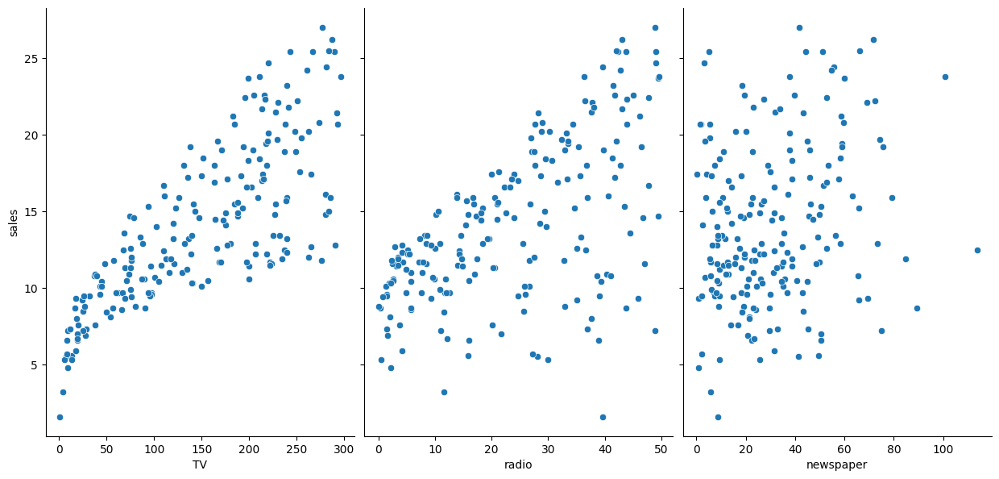
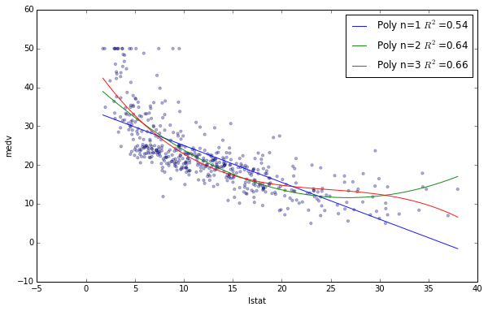

significantly more functionality for general purpose machine learning
Code
import pandas as pdimport numpy as npfrom sklearn.linear_model import LinearRegressionfrom sklearn.model_selection import train_test_split, KFold, cross_val_scorefrom sklearn import metricsimport statsmodels.formula.api as smf# visualizationimport seaborn as snsimport matplotlib.pyplot as plt%matplotlib inline
3.2 Reading the advertising data
Code
# read data into a DataFramedata = pd.read_csv('https://raw.githubusercontent.com/marcopeix/ISL-linear-regression/refs/heads/master/data/Advertising.csv', index_col=0)data.head()
TV
radio
newspaper
sales
1
230.1
37.8
69.2
22.1
2
44.5
39.3
45.1
10.4
3
17.2
45.9
69.3
9.3
4
151.5
41.3
58.5
18.5
5
180.8
10.8
58.4
12.9
What are the observations?
Each observation represents one market (200 markets in the dataset)
What are the features?
TV: advertising dollars spent on TV for a single product (in thousands of dollars)
Radio: advertising dollars spent on Radio
Newspaper: advertising dollars spent on Newspaper
What is the response?
Sales: sales of a single product in a given market (in thousands of widgets)
3.3 Questions about the data
You are asked by the company: On the basis of this data, how should we spend our advertising money in the future?
You come up with more specific questions:
Is there a relationship between ads and sales?
How strong is that relationship?
Which ad types contribute to sales?
What is the effect of each ad type of sales?
Given ad spending in a particular market, can sales be predicted?
3.4 Visualizing the data
Use a scatter plot to visualize the relationship between the features and the response.
Code
# scatter plot in Seabornsns.pairplot(data, x_vars=['TV','radio','newspaper'], y_vars='sales', size=6, aspect=0.7)

Code
# include a "regression line"sns.pairplot(data, x_vars=['TV','radio','newspaper'], y_vars='sales', size=6, aspect=0.7, kind='reg')
# manually calculate the prediction7.0326+0.0475*50
9.4076
Code
### STATSMODELS #### you have to create a DataFrame since the Statsmodels formula interface expects itX_new = pd.DataFrame({'TV': [50]})# predict for a new observationlm.predict(X_new)
0 9.409426
dtype: float64
Code
### SCIKIT-LEARN #### predict for a new observationlinreg.predict([[50]])
array([9.40942557])
Thus, we would predict Sales of 9,409 widgets in that market.
4.4 Does the scale of the features matter?
Let’s say that TV was measured in dollars, rather than thousands of dollars. How would that affect the model?
Code
data['TV_dollars'] = data.TV *1000data.head()
TV
radio
newspaper
sales
TV_dollars
1
230.1
37.8
69.2
22.1
230100.0
2
44.5
39.3
45.1
10.4
44500.0
3
17.2
45.9
69.3
9.3
17200.0
4
151.5
41.3
58.5
18.5
151500.0
5
180.8
10.8
58.4
12.9
180800.0
Code
### SCIKIT-LEARN #### create X and yfeature_cols = ['TV_dollars']X = data[feature_cols]y = data.sales# instantiate and fitlinreg = LinearRegression()linreg.fit(X, y)# print the coefficientsprint(linreg.intercept_)print(linreg.coef_)
7.032593549127694
[4.75366404e-05]
How do we interpret the TV_dollars coefficient (\(\beta_1\))?
A “unit” increase in TV ad spending is associated with a 0.0000475 “unit” increase in Sales.
Meaning: An additional dollar spent on TV ads is associated with an increase in sales of 0.0475 widgets.
Meaning: An additional $1,000 spent on TV ads is associated with an increase in sales of 47.5 widgets.
Code
# predict for a new observationlinreg.predict(50000)
array([ 9.40942557])
The scale of the features is irrelevant for linear regression models, since it will only affect the scale of the coefficients, and we simply change our interpretation of the coefficients.
5 Part 3: A deeper understanding
5.1 Bias and variance
Linear regression is a low variance/high bias model:
Low variance: Under repeated sampling from the underlying population, the line will stay roughly in the same place
High bias: The line will rarely fit the data well
A closely related concept is confidence intervals.
5.2 Confidence intervals
Statsmodels calculates 95% confidence intervals for our model coefficients, which are interpreted as follows: If the population from which this sample was drawn was sampled 100 times, approximately 95 of those confidence intervals would contain the “true” coefficient.
Code
### STATSMODELS #### print the confidence intervals for the model coefficientslm.conf_int()
0
1
Intercept
6.129719
7.935468
TV
0.042231
0.052843
We only have a single sample of data, and not the entire population of data.
The “true” coefficient is either within this interval or it isn’t, but there’s no way to actually know.
We estimate the coefficient with the data we do have, and we show uncertainty about that estimate by giving a range that the coefficient is probably within.
Note: 95% confidence intervals are just a convention. You can create 90% confidence intervals (which will be more narrow), 99% confidence intervals (which will be wider), or whatever intervals you like.
A closely related concept is hypothesis testing.
5.3 Hypothesis testing and p-values
General process for hypothesis testing:
You start with a null hypothesis and an alternative hypothesis (that is opposite the null).
You check whether the data supports rejecting the null hypothesis or failing to reject the null hypothesis.
For model coefficients, here is the conventional hypothesis test:
null hypothesis: There is no relationship between TV ads and Sales (and thus \(\beta_1\) equals zero)
alternative hypothesis: There is a relationship between TV ads and Sales (and thus \(\beta_1\) is not equal to zero)
How do we test this hypothesis?
The p-value is the probability that the relationship we are observing is occurring purely by chance.
If the 95% confidence interval for a coefficient does not include zero, the p-value will be less than 0.05, and we will reject the null (and thus believe the alternative).
If the 95% confidence interval includes zero, the p-value will be greater than 0.05, and we will fail to reject the null.
Code
### STATSMODELS #### print the p-values for the model coefficientslm.pvalues
Intercept 1.406300e-35
TV 1.467390e-42
dtype: float64
Thus, a p-value less than 0.05 is one way to decide whether there is likely a relationship between the feature and the response. In this case, the p-value for TV is far less than 0.05, and so we believe that there is a relationship between TV ads and Sales.
Note that we generally ignore the p-value for the intercept.
5.4 How well does the model fit the data?
R-squared:
A common way to evaluate the overall fit of a linear model
Defined as the proportion of variance explained, meaning the proportion of variance in the observed data that is explained by the model
Also defined as the reduction in error over the null model, which is the model that simply predicts the mean of the observed response
Between 0 and 1, and higher is better
Here’s an example of what R-squared “looks like”:

R-squared
Let’s calculate the R-squared value for our simple linear model:
Code
### STATSMODELS #### print the R-squared value for the modelprint(lm.rsquared)
0.611875050850071
Code
### SCIKIT-LEARN #### calculate the R-squared value for the modely_pred = linreg.predict(X)metrics.r2_score(y, y_pred)
0.611875050850071
The threshold for a “good” R-squared value is highly dependent on the particular domain.
R-squared is more useful as a tool for comparing models.
6 Part 4: Multiple Linear Regression
Simple linear regression can easily be extended to include multiple features, which is called multiple linear regression:
\(y = \beta_0 + \beta_1x_1 + ... + \beta_nx_n\)
Each \(x\) represents a different feature, and each feature has its own coefficient:
\(y = \beta_0 + \beta_1 \times TV + \beta_2 \times Radio + \beta_3 \times Newspaper\)
Code
### SCIKIT-LEARN #### create X and yfeature_cols = ['TV', 'radio', 'newspaper']X = data[feature_cols]y = data.sales# instantiate and fitlinreg = LinearRegression()linreg.fit(X, y)# print the coefficientsprint(linreg.intercept_)print(linreg.coef_)
For a given amount of Radio and Newspaper spending, an increase of $1000 in TV spending is associated with an increase in Sales of 45.8 widgets.
For a given amount of TV and Newspaper spending, an increase of $1000 in Radio spending is associated with an increase in Sales of 188.5 widgets.
For a given amount of TV and Radio spending, an increase of $1000 in Newspaper spending is associated with an decrease in Sales of 1.0 widgets. How could that be?
6.1 Feature selection
How do I decide which features to include in a linear model?
6.1.1 Using p-values
We could try a model with all features, and only keep features in the model if they have small p-values:
Code
### STATSMODELS #### create a fitted model with all three featureslm = smf.ols(formula='sales ~ TV + radio + newspaper', data=data).fit()# print the p-values for the model coefficientsprint(lm.pvalues)
Intercept 1.267295e-17
TV 1.509960e-81
radio 1.505339e-54
newspaper 8.599151e-01
dtype: float64
This indicates we would reject the null hypothesis for TV and Radio (that there is no association between those features and Sales), and fail to reject the null hypothesis for Newspaper. Thus, we would keep TV and Radio in the model.
However, this approach has drawbacks:
Linear models rely upon a lot of assumptions (such as the features being independent), and if those assumptions are violated (which they usually are), p-values are less reliable.
Using a p-value cutoff of 0.05 means that if you add 100 features to a model that are pure noise, 5 of them (on average) will still be counted as significant.
6.1.2 Using R-squared
We could try models with different sets of features, and compare their R-squared values:
Code
# R-squared value for the model with two featureslm = smf.ols(formula='sales ~ TV + radio', data=data).fit()print(lm.rsquared)
0.8971942610828956
Code
# R-squared value for the model with three featureslm = smf.ols(formula='sales ~ TV + radio + newspaper', data=data).fit()print(lm.rsquared)
0.8972106381789522
This would seem to indicate that the best model includes all three features. Is that right?
R-squared will always increase as you add more features to the model, even if they are unrelated to the response.
As such, using R-squared as a model evaluation metric can lead to overfitting.
Adjusted R-squared is an alternative that penalizes model complexity (to control for overfitting), but it generally under-penalizes complexity.
As well, R-squared depends on the same assumptions as p-values, and it’s less reliable if those assumptions are violated.
6.1.3 Using train/test split (or cross-validation)
A better approach to feature selection!
They attempt to directly estimate how well your model will generalize to out-of-sample data.
They rely on fewer assumptions that linear regression.
They can easily be applied to any model, not just linear models.
6.2 Evaluation metrics for regression problems
Evaluation metrics for classification problems, such as accuracy, are not useful for regression problems. We need evaluation metrics designed for comparing continuous values.
Let’s create some example numeric predictions, and calculate three common evaluation metrics for regression problems:
MAE is the easiest to understand, because it’s the average error.
MSE is more popular than MAE, because MSE “punishes” larger errors, which tends to be useful in the real world.
RMSE is even more popular than MSE, because RMSE is interpretable in the “y” units.
All of these are loss functions, because we want to minimize them.
Here’s an additional example, to demonstrate how MSE/RMSE punish larger errors:
Code
# same true values as abovey_true = [100, 50, 30, 20]# new set of predicted valuesy_pred = [60, 50, 30, 20]# MAE is the same as beforeprint(metrics.mean_absolute_error(y_true, y_pred))# RMSE is larger than beforeprint(np.sqrt(metrics.mean_squared_error(y_true, y_pred)))
10.0
20.0
6.3 Using train/test split for feature selection
Let’s use train/test split with RMSE to decide whether Newspaper should be kept in the model:
Code
# define a function that accepts X and y and computes testing RMSEdef train_test_rmse(X, y): X_train, X_test, y_train, y_test = train_test_split(X, y, random_state=1) linreg = LinearRegression() linreg.fit(X_train, y_train) y_pred = linreg.predict(X_test)return np.sqrt(metrics.mean_squared_error(y_test, y_pred))
Code
# include Newspaperfeature_cols = ['TV', 'radio', 'newspaper']X = data[feature_cols]train_test_rmse(X, y)